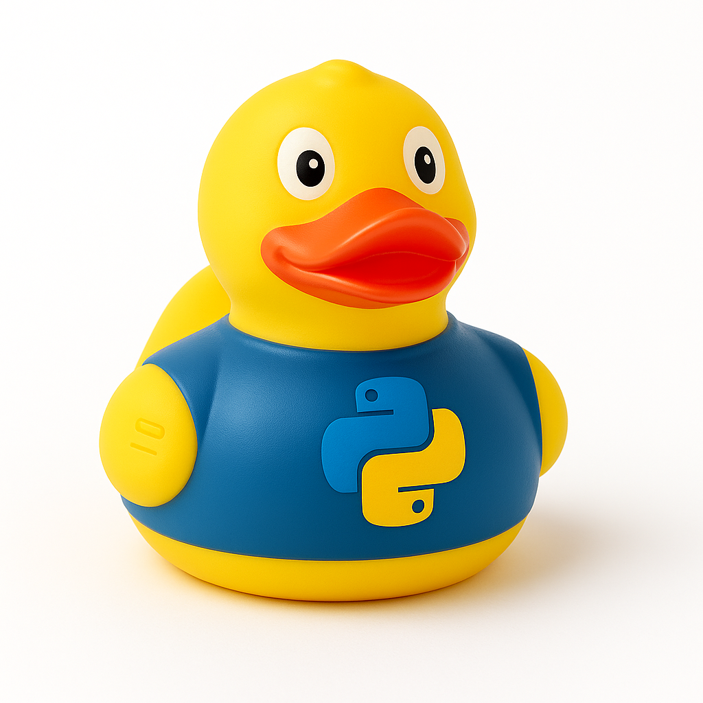

Patito Python
Precio: desde 0,60€ hasta 3,20€
Stock disponible:
- Pequeño (0,60 €) - 35 unidades
- Mediano (1,80 €) - 22 unidades
- Grande (3,20 €) - 10 unidades
Descripción detallada:
- El patito Python representa la calma y la elegancia del código limpio.
- Fabricado con silicona suave, es el compañero perfecto para quienes disfrutan de la simplicidad bien pensada.
- Ideal para programadores Zen, amantes de Jupyter, y quienes creen que: "Simple is better than complex".
- Consejo del pato: "Explícame tu código y verás cómo los bugs se van flotando"